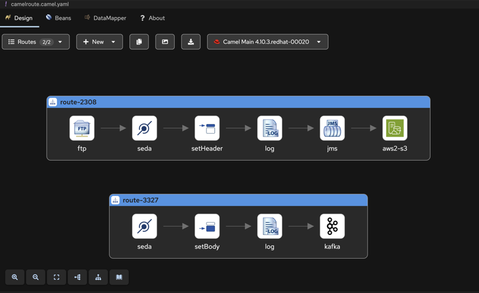

Introduction
In this blog post, we’ll explore how Apache Camel JBang’s Infrastructure Command can help you rapidly prototype end-to-end integration scenarios and adapt to changing requirements. We’ll walk through a realistic development scenario where requirements evolve over time, demonstrating how Camel’s flexibility makes it an ideal choice for proof-of-concept development.
Camel JBang Infrastructure: Your Prototyping Toolkit
We already know and love Camel JBang (if you don’t, check out Claus Ibsen’s YouTube channel for excellent tutorials). One of recent additions is the infra command, which can list and run external services like brokers, databases, FTP servers, and more. To see available services, simply run:
$ camel infra list
Apache Camel excels at integrating multiple systems, and the infra command streamlines the process of setting up these systems for development and testing. With just a few commands and minimal configuration, you can create sophisticated proof-of-concepts.
Scenario: A Typical Development Journey
Let’s walk through a realistic scenario that many developers face: building a proof-of-concept with requirements that evolve during development.
This is something that happens all the time in IT, picture this, you are a developer, and you have a manager asking for a POC, and you know, requirements are always shady, especially in IT, and they change, A LOT!
let’s start with something simple. The initial requirement is: We need a simple file processing system. Files appear in the /data folder occasionally, and we want to upload them to an S3 bucket called my-bucket. We don't have S3 credentials set up yet for this POC. This is a common situation - you need to demonstrate functionality before infrastructure is fully provisioned.
Implementation
The goal is straightforward: poll a given folder and upload files to an S3 bucket. Let’s see how this can be easily prototyped with Apache Camel.
First of all, make sure that JBang is installed and let’s install Camel JBang:
$ jbang app install --name camel --force camel@apache/camel
At the time of writing this blogpost, the version is:
$ camel version
JBang version: 0.122.0
Camel JBang version: 4.13.0
Let’s see how camel infra can help with AWS services
$ camel infra list
ALIAS IMPLEMENTATION DESCRIPTION
aws cloud-watch, config, dynamo-db, Local AWS Services with LocalStack
dynamodb, ec2, event-bridge, iam,
kinesis, kms, lambda, s3,
secrets-manager, sns, sqs, sts
Perfect! We can run a local S3 service for our POC:
$ camel infra run aws s3
{
"accessKey" : "accesskey",
"amazonAWSHost" : "localhost:4566",
"getConnectionProperties" : {
"aws.access.key" : "accesskey",
"aws.host" : "localhost:4566",
"aws.protocol" : "http",
"aws.region" : "us-east-1",
"aws.secret.key" : "secretkey"
},
"protocol" : "http",
"region" : "us-east-1",
"secretKey" : "secretkey"
}
Notice how the JSON output provides all the configuration details we need for the AWS S3 component. There’s almost a 1:1 mapping between the infra output and component configuration.
let’s write some code and create a simple Camel route that uploads files to S3. For this purpose, we’ll use the Apache Camel AWS S3 component, the JSON provided by the camel infra run aws s3 command contains all the informations to get started with the component:
import org.apache.camel.builder.RouteBuilder;
public class CamelRoute extends RouteBuilder {
@Override
public void configure() throws Exception {
from("file:/data")
.setHeader("CamelAwsS3Key", simple("${headers.CamelFileName}"))
.log("Uploading file ${headers.CamelFileName} to S3")
.to("aws2-s3:my-bucket" +
"?accessKey=accesskey" +
"&secretKey=secretkey" +
"®ion=us-east-1" +
"&overrideEndpoint=true" +
"&uriEndpointOverride=http://localhost:4566" +
"&forcePathStyle=true" +
"&autoCreateBucket=true");
}
}
Save this route to a file named CamelRoute.java and we can finally execute it with Camel JBang
$ camel run CamelRoute.java
2025-07-18 13:59:02.820 INFO 16070 --- [ main] org.apache.camel.main.MainSupport : Apache Camel (JBang) 4.13.0 is starting
2025-07-18 13:59:02.968 INFO 16070 --- [ main] org.apache.camel.main.MainSupport : Running Mac OS X 15.5 (aarch64)
2025-07-18 13:59:02.968 INFO 16070 --- [ main] org.apache.camel.main.MainSupport : Using Java 21.0.2 (OpenJDK 64-Bit Server VM) with PID 16070
2025-07-18 13:59:02.968 INFO 16070 --- [ main] org.apache.camel.main.MainSupport : Started by fmariani in /private/tmp/test2
2025-07-18 13:59:03.048 INFO 16070 --- [ main] org.apache.camel.main.ProfileConfigurer : The application is starting with profile: dev
2025-07-18 13:59:03.692 INFO 16070 --- [ main] he.camel.cli.connector.LocalCliConnector : Camel JBang CLI enabled
2025-07-18 13:59:04.363 INFO 16070 --- [ main] .main.download.MavenDependencyDownloader : Downloaded: org.apache.camel:camel-aws2-s3:4.13.0 (took: 580ms) from: central@https://repo1.maven.org/maven2
2025-07-18 13:59:04.385 INFO 16070 --- [ main] e.camel.impl.engine.AbstractCamelContext : Apache Camel 4.13.0 (CamelRoute) is starting
2025-07-18 13:59:04.859 INFO 16070 --- [ main] e.camel.impl.engine.AbstractCamelContext : Routes startup (total:1)
2025-07-18 13:59:04.859 INFO 16070 --- [ main] e.camel.impl.engine.AbstractCamelContext : Started route1 (file://data)
2025-07-18 13:59:04.859 INFO 16070 --- [ main] e.camel.impl.engine.AbstractCamelContext : Apache Camel 4.13.0 (CamelRoute) started in 474ms (build:0ms init:0ms start:474ms boot:1s562ms)
Test it by creating a file, such as test.txt, and copy it into the /data folder
$ echo "Test content" > /data/test.txt
The output shows successful processing:
2025-07-18 13:59:16.397 INFO 16070 --- [5 - file://data] CamelRoute.java:9 : Uploading file test.txt to S3
The first feature request
After the initial demo, new requirements emerge: I forgot to mention, every time a file is picked up, a message with the following informations (...) has to be sent to a kafka topic named myTopic
Luckily, camel infra list exposes a kafka service that can be easily run with:
$ camel infra run kafka
{
"brokers" : "localhost:9092",
"getBootstrapServers" : "localhost:9092"
}
In this case we have a perfect 1:1 match between the properties from the infra run command and the Apache Camel Kafka component, the only required property for the Kafka component is brokers, let’s update the previous route with the new requirements:
import org.apache.camel.builder.RouteBuilder;
public class CamelRoute extends RouteBuilder {
@Override
public void configure() throws Exception {
from("file:/data")
.to("seda:kafka")
.setHeader("CamelAwsS3Key", simple("${headers.CamelFileName}"))
.log("Uploading file ${headers.CamelFileName} to S3 with content ${body}")
.to("aws2-s3:my-bucket" +
"?accessKey=accesskey" +
"&secretKey=secretkey" +
"®ion=us-east-1" +
"&overrideEndpoint=true" +
"&uriEndpointOverride=http://localhost:4566" +
"&forcePathStyle=true" +
"&autoCreateBucket=true");
from("seda:kafka")
.setBody(simple("Uploading ${headers.CamelFileNameOnly} with content ${body}"))
.log("Sending event to Kafka Topic")
.to("kafka:myTopic?brokers=localhost:9092");
}
}
Re-run the route using Camel JBang, add a file to the /data folder, and a similar log will be printed:
$ camel run CamelRoute.java
...
2025-07-18 14:06:43.097 INFO 16427 --- [5 - file://data] CamelRoute.java:10 : Uploading file test.txt to S3 with content Body!
2025-07-18 14:06:43.097 INFO 16427 --- [ - seda://kafka] CamelRoute.java:22 : Sending event to Kafka Topic
The file is uploaded to AWS S3, and a message is sent to the kafka topic.
Another requirment change
Ooops, my bad, the file is not on the file system where the application is running, but it is on an FTP server
Checking the camel infra list we get lucky another time (I wonder why… :D)—there is an FTP service that can be used:
camel infra run ftp
{
"directoryName" : "myTestDirectory",
"getFtpRootDir" : "file:///Users/fmariani/Repositories/croway/camel/target/ftp/camel-test-infra-test-directory/camel-test-infra-configuration-test-directory",
"getPort" : 2221,
"host" : "localhost",
"hostname" : "localhost",
"password" : "admin",
"port" : 2221,
"username" : "admin"
}
Note: For most infra services, Docker images via Testcontainers are executed behind the scenes. The infra command exposes most of the components from the Apache Camel test infra. There’s no magic behind it—we’re reusing the same infrastructure that we use to test Camel itself. Some services, like the FTP one, don’t need Docker; instead, an embedded FTP service is spun up.
Let’s update the previous route. Instead of the file component, the Apache Camel FTP component has to be used, using Java DSL there is not an easy 1:1 mapping between the component and the infra run ftp JSON, but we would have 1:1 mapping using YAML DSL.
import org.apache.camel.builder.RouteBuilder;
public class CamelRoute extends RouteBuilder {
@Override
public void configure() throws Exception {
from("ftp:admin@localhost:2221/myTestDirectory?password=admin&noop=true")
.to("seda:kafka")
.setHeader("CamelAwsS3Key", simple("${headers.CamelFileName}"))
.log("Uploading file ${headers.CamelFileName} to S3 with content ${body}")
.to("aws2-s3:my-bucket" +
"?accessKey=accesskey" +
"&secretKey=secretkey" +
"®ion=us-east-1" +
"&overrideEndpoint=true" +
"&uriEndpointOverride=http://localhost:4566" +
"&forcePathStyle=true" +
"&autoCreateBucket=true");
from("seda:kafka")
.setBody(simple("Uploading ${headers.CamelFileNameOnly} with content ${body}"))
.log("Sending event to Kafka Topic")
.to("kafka:myTopic?brokers=localhost:9092");
}
}
We can use any software to interact with the FTP, such as FileZilla, but is it really needed? we can easily automate the upload part to the FTP server with Camel, we can do it with Camel JBang:
$ echo "Test content" > test.txt
$ camel cmd send --body=file:test.txt --uri='ftp:admin@localhost:2221/myTestDirectory?password=admin'
2025-07-18 14:23:55.104 17196 --- ftp://admin@localhost:2221/myTestDirecto : Sent (success) (192ms)
Finally, we can observe the following in the log of the Camel Route:
2025-07-18 14:24:16.629 INFO 17266 --- [myTestDirectory] CamelRoute.java:10 : Uploading file 7A28171126F2E65-0000000000000000 to S3 with content Body!
2025-07-18 14:24:16.629 INFO 17266 --- [ - seda://kafka] CamelRoute.java:22 : Sending event to Kafka Topic
The AI Feature request
Finally, each file contains informations that we would like to be available to our LLM, let's decouple the process though, when a file is picked up, send the file to an Artemis queue, then, parse the content of the file, apply the following logic, and insert the content in Qdrant
Let’s open a couple of console and run the services
$ camel infra run artemis
{
"brokerPort" : 61616,
"password" : "artemis",
"remoteURI" : "tcp://localhost:61616",
"restart" : null,
"serviceAddress" : "tcp://localhost:61616",
"userName" : "artemis"
}
```console
$ camel infra run qdrant
{
"getGrpcHost" : "localhost",
"getGrpcPort" : 6334,
"getHttpHost" : "localhost",
"getHttpPort" : 6333,
"host" : "localhost",
"port" : 6334
}
For a plain Camel scenario, the Apache Camel JMS component configuration is a little bit cumbersome, luckily there are examples that shows how this can be done.
Let’s create an application.properties file and add the following configuration, in this case, we’ll use camel infra run artemis informations to fill the application.properties
# artemis connection factory
camel.beans.artemisCF = #class:org.apache.activemq.artemis.jms.client.ActiveMQConnectionFactory
# URL for broker
camel.beans.artemisCF.brokerURL = tcp://localhost:61616
# if broker requires specific login
camel.beans.artemisCF.user = artemis
camel.beans.artemisCF.password = artemis
# pooled connection factory
camel.beans.poolCF = #class:org.messaginghub.pooled.jms.JmsPoolConnectionFactory
camel.beans.poolCF.connectionFactory = #bean:artemisCF
camel.beans.poolCF.maxSessionsPerConnection = 500
camel.beans.poolCF.connectionIdleTimeout = 20000
# more options can be configured
# https://github.com/messaginghub/pooled-jms/blob/main/pooled-jms-docs/Configuration.md
# setup JMS component to use connection factory
camel.component.jms.connection-factory = #bean:poolCF
Let’s update the CamelRoute file to send the message to the queue:
import org.apache.camel.builder.RouteBuilder;
public class CamelRoute extends RouteBuilder {
@Override
public void configure() throws Exception {
from("ftp:admin@localhost:2221/myTestDirectory?password=admin&noop=true")
.to("seda:kafka")
.setHeader("CamelAwsS3Key", simple("${headers.CamelFileName}"))
.log("Uploading file ${headers.CamelFileName} to S3 with content ${body}")
.to("jms:myQueue")
.to("aws2-s3:my-bucket" +
"?accessKey=accesskey" +
"&secretKey=secretkey" +
"®ion=us-east-1" +
"&overrideEndpoint=true" +
"&uriEndpointOverride=http://localhost:4566" +
"&forcePathStyle=true" +
"&autoCreateBucket=true");
from("seda:kafka")
.setBody(simple("Uploading ${headers.CamelFileNameOnly} with content ${body}"))
.log("Sending event to Kafka Topic")
.to("kafka:myTopic?brokers=localhost:9092");
}
}
The camel run command has to be updated, to include the application.properties file:
$ camel run CamelRoute.java application.properties
Finally, let’s create the Camel route that consumes from the queue and inserts data into Qdrant. Of course, before doing that, we need to create embeddings from the content of the body. This can be easily done with the Apache Camel Langchain4j Embeddings component.
Before that, the collection has to be created in Qdrant, let’s use Camel to achieve this:
import org.apache.camel.builder.RouteBuilder;
import io.qdrant.client.grpc.Collections;
import org.apache.camel.component.qdrant.Qdrant;
import org.apache.camel.component.qdrant.QdrantAction;
import org.apache.camel.spi.DataType;
public class CreateEmbeddingsCollection extends RouteBuilder {
@Override
public void configure() throws Exception {
from("timer://runOnce?repeatCount=1")
.log("Creating collection")
.setHeader(Qdrant.Headers.ACTION)
.constant(QdrantAction.CREATE_COLLECTION)
.setBody()
.constant(
Collections.VectorParams.newBuilder()
.setSize(384)
.setDistance(Collections.Distance.Cosine).build())
.to("qdrant:embeddings")
.log("Collection embeddings created");
}
}
Running this route once via Camel JBang we’ll get the following output
camel run CreateEmbeddingsCollection.java --dependency=camel-qdrant
...
2025-07-18 15:42:06.157 INFO 20614 --- [ main] e.camel.impl.engine.AbstractCamelContext : Apache Camel 4.13.0 (CreateEmbeddingsCollection) started in 403ms (build:0ms init:0ms start:403ms boot:1s150ms)
2025-07-18 15:42:07.098 INFO 20614 --- [timer://runOnce] CreateEmbeddingsCollection.java:13 : Creating collection
2025-07-18 15:42:07.299 INFO 20614 --- [ducer:endpoint2] CreateEmbeddingsCollection.java:22 : Collection embeddings created
Let’s create the CamelRouteQueueConsumer.java route that consumes from the queue, creates an embedding from the body using a local LLM and inserts the resulting vector in Qdrant:
import org.apache.camel.builder.RouteBuilder;
import dev.langchain4j.model.embedding.onnx.allminilml6v2.AllMiniLmL6V2EmbeddingModel;
import org.apache.camel.component.qdrant.Qdrant;
import org.apache.camel.component.qdrant.QdrantAction;
import org.apache.camel.spi.DataType;
public class CamelRouteQueueConsumer extends RouteBuilder {
@Override
public void configure() throws Exception {
getCamelContext().getRegistry().bind("embedding-model", new AllMiniLmL6V2EmbeddingModel());
from("jms:myQueue")
// Do complex logic with the body ${body}
.convertBodyTo(String.class)
.to("langchain4j-embeddings:test")
.transform(new DataType("qdrant:embeddings"))
.setHeader(Qdrant.Headers.ACTION, constant(QdrantAction.UPSERT))
.to("qdrant:embeddings")
.log("Embedding inserted successfully");
}
}
In this case, the body sent to the jms queue is the content of the file. The langchain4j-embeddings:test will generate the embedding using AllMiniLmL6V2EmbeddingModel which is then transformed .transform(new DataType("qdrant:embeddings")) to a format that can be easily inserted in Qdrant. Finall, the actual insertion into the vector store .setHeader(Qdrant.Headers.ACTION, constant(QdrantAction.UPSERT)).to("qdrant:embeddings").
Run the following route with this command (extra dependencies are needed):
camel run CamelRouteQueueConsumer.java application.properties --dependency=dev.langchain4j:langchain4j-embeddings-all-minilm-l6-v2:0.36.2,camel-qdrant
The final architecture
Our final architecture now includes:
- AWS S3 (LocalStack) - File storage
- Kafka - Event streaming
- FTP - File input source
- ActiveMQ Artemis - Message queuing
- Qdrant - Vector database for AI embeddings
All services are orchestrated through Camel routes, demonstrating how complex integration scenarios can be built incrementally.
Testing the complete pipeline:
$ camel cmd send --body=file:test.txt --uri='ftp:admin@localhost:2221/myTestDirectory?password=admin'
Results in successful processing across all components:
camel run CamelRouteQueueConsumer.java application.properties --dependency=dev.langchain4j:langchain4j-embeddings-all-minilm-l6-v2:0.36.2,camel-qdrant
...
2025-07-18 15:50:45.877 INFO 22126 --- [ main] e.camel.impl.engine.AbstractCamelContext : Apache Camel 4.13.0 (CamelRouteQueueConsumer) started in 530ms (build:0ms init:0ms start:530ms boot:2s811ms)
2025-07-18 15:50:56.331 INFO 22126 --- [ducer:endpoint3] CamelRouteQueueConsumer.java:20 : Embedding inserted successfully
Conclusion
This walkthrough demonstrates how Apache Camel JBang’s infrastructure command enables rapid prototyping of complex integration scenarios. Key benefits include:
- Rapid Infrastructure Setup - Services can be started with single commands
- Consistent Configuration - Infrastructure output maps directly to component configuration
- Iterative Development - Requirements can evolve without major architectural changes
- Production Readiness - Prototypes can be refined into production-ready solutions
The camel infra command significantly reduces the time between concept and working prototype, making it invaluable for proof-of-concept development and architectural exploration.
Visual development
For those who prefer visual development, Kaoto provides a graphical interface for designing Camel routes:

as you can see from the image, a camelroute.camel.yaml file is created, and everything that was discussed in this blog post applies here as well, in particular, we can run the yaml route via jbang
camel run camelroute.camel.yaml application.properties
This visual approach can be particularly helpful when demonstrating integration flows to stakeholders or when collaborating with team members who prefer graphical representations of system architecture.
The code for this blog post is available at https://github.com/Croway/camel-infra-blogpost/tree/main